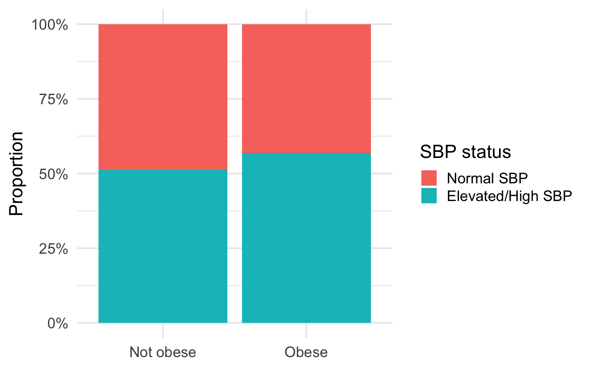
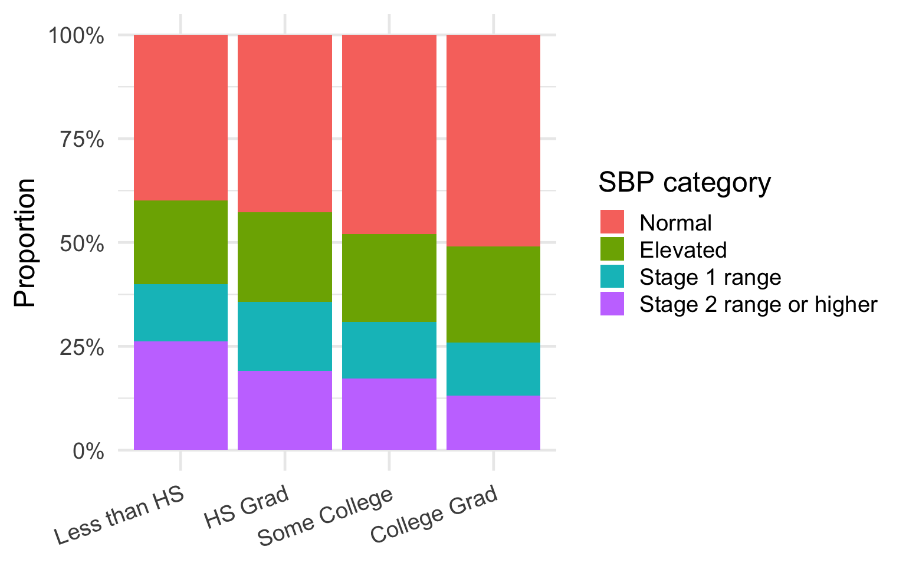

Participants
7853
Mean SBP
124.1 mmHg
Mean BMI
30.2 kg/m²
Age Range
21 – 79 years


Female Mean SBP
121.5 mmHg
Male Mean SBP
126.8 mmHg
Mean Difference
-5.3 mmHg

| Sex | n | Mean | SD | Median | IQR |
|---|---|---|---|---|---|
| Female | 3590 | 121.5 | 20.1 | 118 | 25.7 |
| Male | 3493 | 126.8 | 17.1 | 124 | 20.0 |
| Mean difference (Female - Male) | 90% CI lower | 90% CI upper | p-value |
|---|---|---|---|
| -5.3 | -6.03 | -4.58 | <0.001 |
Participants
7079
College Grad Mean SBP
121.2 mmHg
Less than HS Mean SBP
128.2 mmHg
ANOVA p-value
< 0.001


| Education | n | Mean SBP | SD | Median | IQR |
|---|---|---|---|---|---|
| Less than HS | 1228 | 128.2 | 21.1 | 124.7 | 27.7 |
| HS Grad | 1695 | 125.4 | 19.2 | 122.7 | 23.7 |
| Some College | 2360 | 123.3 | 18.4 | 120.7 | 23.7 |
| College Grad | 1796 | 121.2 | 16.9 | 119.3 | 20.7 |
| Comparison | Mean Difference | 90% CI Lower | 90% CI Upper | Adjusted p-value |
|---|---|---|---|---|
| HS Grad-Less than HS | -2.87 | -4.48 | -1.26 | <0.001 |
| Some College-Less than HS | -4.92 | -6.43 | -3.41 | <0.001 |
| College Grad-Less than HS | -7.04 | -8.63 | -5.45 | <0.001 |
| Some College-HS Grad | -2.05 | -3.41 | -0.68 | 0.003 |
| College Grad-HS Grad | -4.17 | -5.62 | -2.72 | <0.001 |
| College Grad-Some College | -2.12 | -3.47 | -0.78 | 0.002 |
Elevated/High SBP: Obese
56.9%
Elevated/High SBP: Not Obese
51.4%
Participants
7029
SBP Cutoff
≥120 mmHg

| Obesity Status | Normal SBP | Elevated/High SBP |
|---|---|---|
| Not obese | 1911 | 2018 |
| Obese | 1335 | 1765 |
$table
Elevated/High SBP Normal SBP P(Elevated/High SBP) 90% conf.
Obese 1765 1335 0.5693548 0.5546700
Not obese 2018 1911 0.5136167 0.5004945
interval
Obese 0.5839187
Not obese 0.5267201
$measures
90% conf. interval
Relative Risk: 1.10852089 1.06908370 1.14941287
Sample Odds Ratio: 1.25199608 1.15634705 1.35555686
Conditional MLE Odds Ratio: 1.25194678 1.15500026 1.35711587
Probability difference: 0.05573814 0.03605971 0.07533904
$p.value
[1] 3.296618e-06 3.312622e-06Participants
7079
Education x SBP Categories
4 x 4
Chi-square p-value
< 0.001
Minimum Expected Count
173.6


Description: The chi-square test of independence showed evidence of an association between the education level and SBP categories, as the X² value computed to 102.74, with p<0.001. Individuals with a higher education level tended to have a greater proportion of normal SBP values and a lower proportion of Stage 2 range or higher values. For example, 51.1% of college graduates were in the normal SBP category compared with 40.2% of participants with less than a high school education, while Stage 2 hypertension or crisis occurred in 13.1% and 25.6% of those groups, respectively.
| Education | Normal | Elevated | Stage 1 range | Stage 2 range or higher |
|---|---|---|---|---|
| Less than HS | 490 | 248 | 169 | 321 |
| HS Grad | 723 | 366 | 282 | 324 |
| Some College | 1133 | 499 | 320 | 408 |
| College Grad | 915 | 416 | 230 | 235 |
| Statistic | Degrees of Freedom | p-value |
|---|---|---|
| 109.67 | 9 | <0.001 |